전체 기록 · 지난 안과 과정까지 모두
지금 적용 중인 내용만 보려면 현황판을 보세요. 이 페이지는 지난 안과 과정을 모두 모아 둔 기록이에요.
home — 인터랙티브 전시 '지하철에서 집으로'
AI 기반 영상 제작 워크샵 기말 프로젝트 · 크리에이티브 브릿지 페스티벌(크브페) 지원작 「Home Sweet Home」 · 3m × 3m 체험 전시 · Unreal Engine 5.4
버전이 올라갈 때마다 이 페이지 한 장에 계속 덧붙여 갑니다. 지난 버전에 확정된 내용은 그대로 두고, 바뀐 부분에는 ver8 처럼 그 버전 표시를 붙입니다. 지금까지 만든 렌더·영상·HTML 자료도 모두 맨 아래 13. 자료 전체에 이 페이지 안으로 넣어 두었어요.
↓사진·영상 다운로드
발표 자료에 쓸 수 있게 묶음으로 받을 수 있어요. 페이지 안의 사진·영상 아래에도 하나씩 받는 버튼이 있어요(렌더 사진은 고화질 1920×1080로 받아져요).
★크브페 작품 사진 (최종 렌더 · 11/16) ver8.2
지원서 요강(최소 5장, 정면·좌측면·우측면 등, 바둑판식, 캡션 8pt)에 맞춰 본안을 다시 찍었어요. 작은 소파, 조명 3500K. 참고 사진처럼 흰 배경에서 눈높이로, 카메라 쪽 벽을 걷어 낸 단면 4면 + 상단 + 관객 시점. 캡션은 그대로 지원서에 붙여 넣으면 돼요.
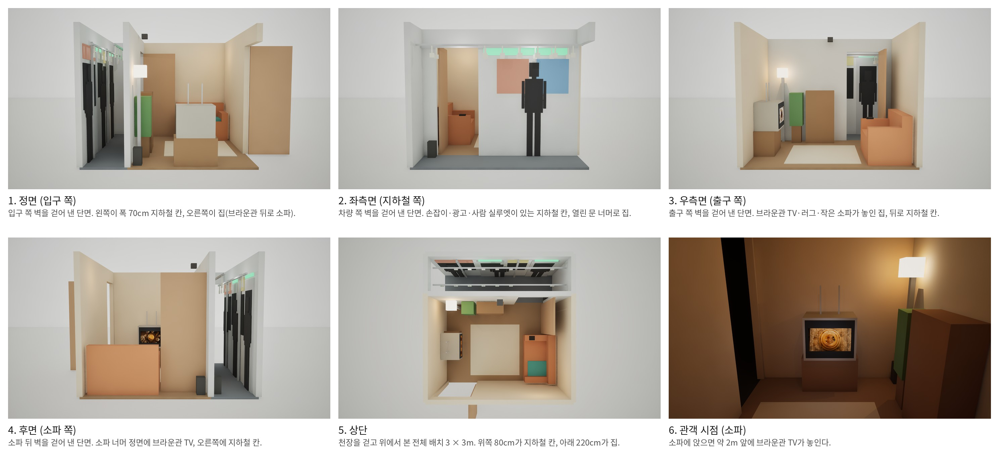
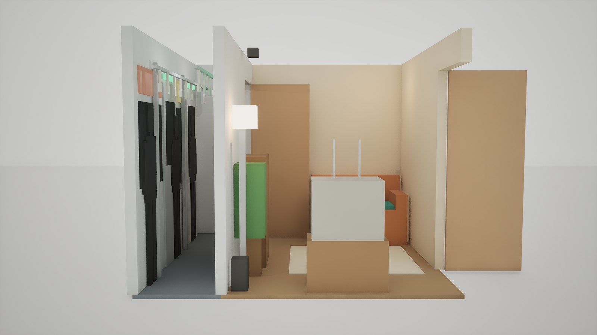
입구 쪽 벽을 걷어 낸 단면. 왼쪽이 폭 70cm 지하철 칸, 오른쪽이 집(브라운관 뒤로 소파). ↓ 고화질 받기
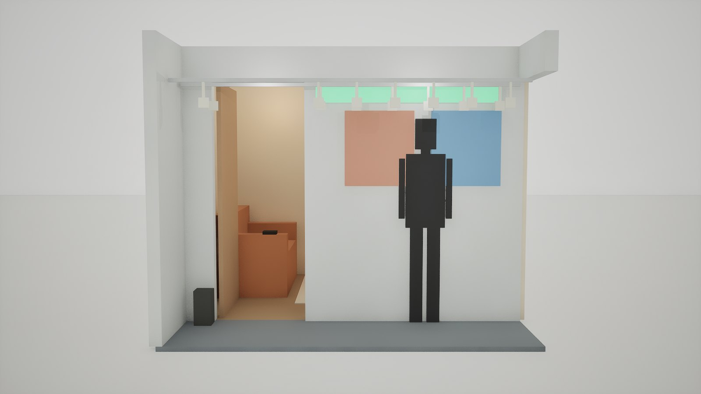
차량 쪽 벽을 걷어 낸 단면. 손잡이·광고·사람 실루엣이 있는 지하철 칸, 열린 문 너머로 집. ↓ 고화질 받기
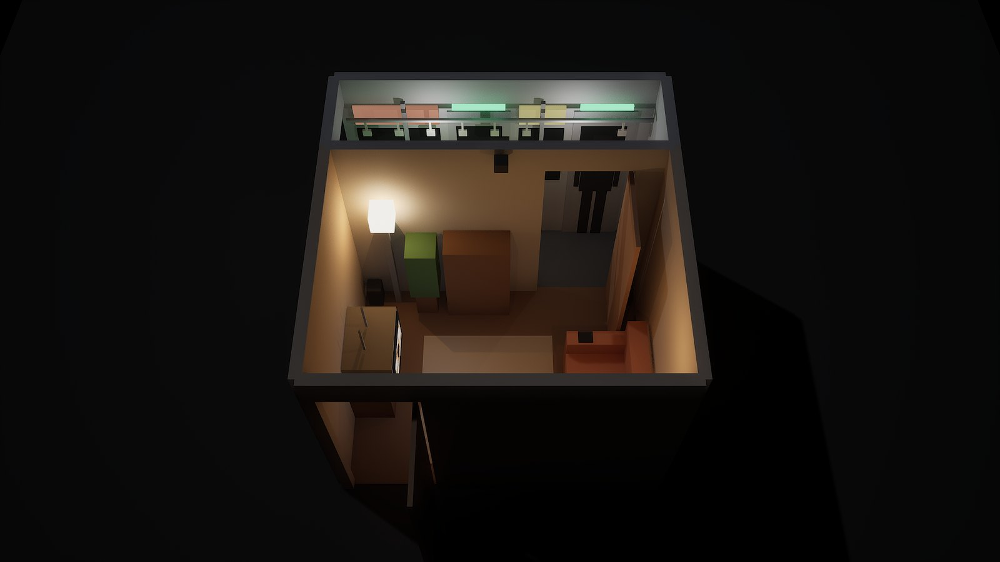
출구 쪽 벽을 걷어 낸 단면. 브라운관 TV·러그·작은 소파가 놓인 집, 뒤로 지하철 칸. ↓ 고화질 받기
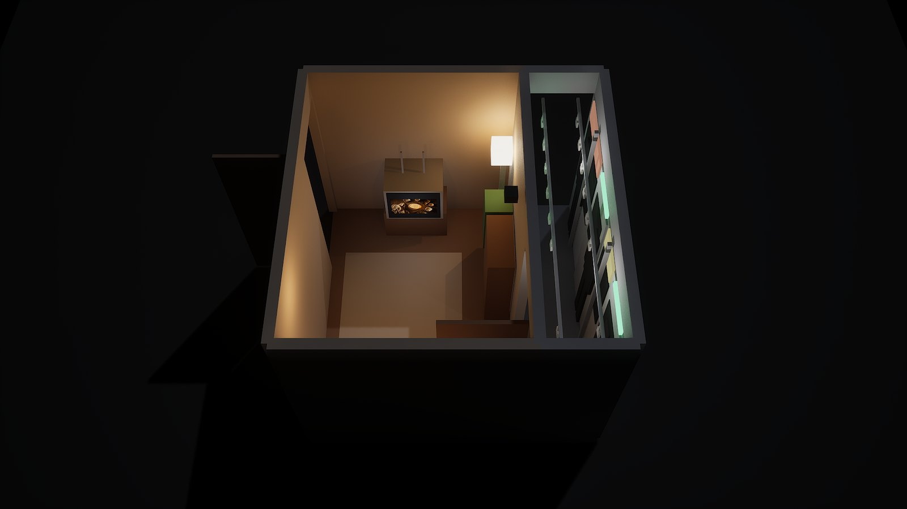
소파 뒤 벽을 걷어 낸 단면. 소파 너머 정면에 브라운관 TV, 오른쪽에 지하철 칸. ↓ 고화질 받기

천장을 걷고 위에서 본 전체 배치 3 × 3m. 위쪽 80cm가 지하철 칸, 아래 220cm가 집. ↓ 고화질 받기
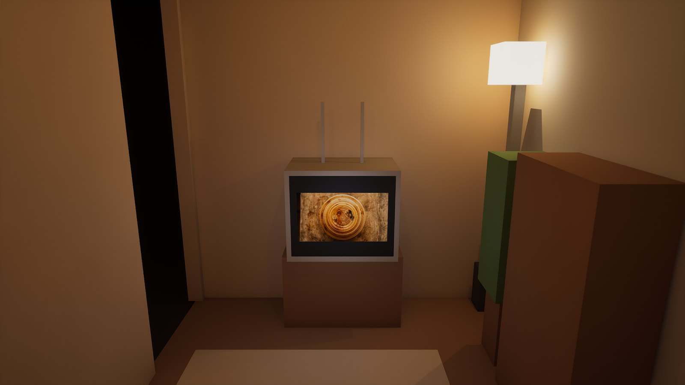
소파에 앉으면 약 2m 앞에 브라운관 TV가 놓인다. ↓ 고화질 받기
입구에서 본 지하철 칸. 영상 없이 손잡이·광고·소음으로 '사회'를 만든다. ↓ 고화질 받기
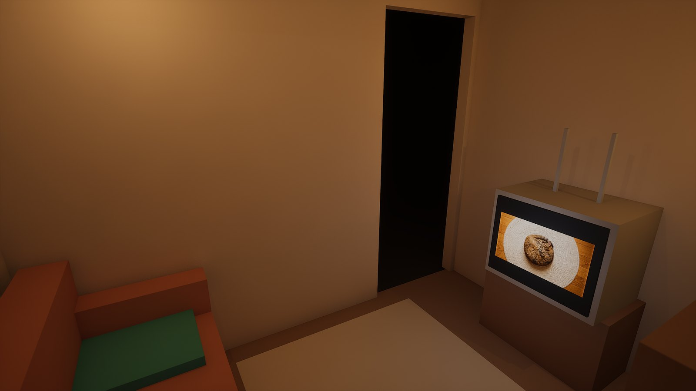
문을 열고 집에 들어선 순간 브라운관 TV가 켜진다. ↓ 고화질 받기

천장 모서리 CCTV가 관객이 머무는 모습을 타임랩스로 남긴다. ↓ 고화질 받기
0한눈에 보기
11/15 팀 카톡으로 본안이 정해졌어요 ver8. 브라운관 + 작은 소파 + 모닥불 영상. 이제 최종 렌더 → 크브페 지원서 → 인터랙션 구현 순서예요.
작업 갈래별 진행률 추정
브라운관 TV · 작은 소파 · 지하철 칸(손잡이, 영상 없음) · 문 열면 TV 켜짐, 리모컨은 소리만 추가 · 센서 감지 · QR은 화면 · 모닥불 영상 + AI 사운드
조명 3500K · 불편한 소리 3단계 종류 · 관객별 결과 페이지(와이파이) · 브라운관 구하는 방법 · 배정 벽 용도
실행 컴퓨터(누구 노트북) · 전시 기간·운영 시간
1결정 현황
정해진 것과 남은 것을 한 표에 모았어요. '추천'은 지원서 채움본에 먼저 써 둔 값이라, 다르게 정하면 그 칸만 바꾸면 돼요.
| # | 항목 | 상태 | 내용 | 근거·메모 |
|---|---|---|---|---|
| A | 공간 구성 | 확정 | 3 × 3m를 가로로 나눔: 지하철 칸(사회) 80 / 집 220 | 배치안 5종 비교 끝에 안 5 선택 |
| B | 사회–집 사이 문 | 확정 | X 190~270, 폭 80 × 210, 집 쪽으로 열림, 경첩 오른쪽, 도어클로저 | 사용자 정정(11/14) |
| C | 집 화면 | 확정 ver7 | 브라운관 TV (프로젝터 안 제외) | 11/15 확정. 8가지 변형 비교 1위 |
| D | 지하철 칸 표현 | 확정 ver7 | 손잡이·광고·노선도 등 시각 디자인만, 영상 없음 | 11/15 확정 |
| E | 인터랙션 구현 방식 | 확정 | Unreal 블루프린트 + 아두이노(키보드 입력) | 교수님 지시 |
| 1 | 앉는 가구 | 확정 ver8 | 최대한 작은 소파 (폭 120 이하 1.5~2인용) | 카톡 11/15 · 리클라이너 안 씀 |
| 2 | 집 조명 색 | 방향 확정 ver7 | 지금 2700K가 너무 붉음 → 더 희게. 제안: 3500K 웜화이트 | 사회 6500K와 대비는 유지 |
| 3 | 문 열면 켜지는 것 | 확정 ver8 | TV가 켜짐 (조명은 처음부터 켜 둠) | 카톡 11/15 |
| 4 | 리모컨의 역할 | 확정 ver8 | 문 열면 영상이 바로 나오고, 리모컨을 눌러도 영상은 그대로, 사운드만 추가 | 카톡 11/15 · 지원서 시놉시스 수정함 |
| 5 | 행동 감지 방식 | 확정 ver8 | 물건마다 센서(방석·담요 바구니 압력, 리모컨 적외선) + CCTV는 타임랩스만 | 카톡 11/15 · 추천대로 |
| 6 | 지하철 칸 꾸밈 세부 | 확정 ver8 | 손잡이 14개 + 회색 벽 + 노선도·안내 출력물 + 소리 | 카톡 11/15 · 추천대로 |
| 7 | 결과 QR | 확정 ver8 | 화면으로 보여 줌 (출구 옆 태블릿/모니터) | 카톡 11/15 |
| 8 | 관객별 결과 페이지 | 추천 | 실제로 관객마다 생성, 휴대용 와이파이 지참 | 안 되면 견본 1개로 대체 |
| 9 | 집 배경음 | 확정 ver8 | 불멍 (장작 타는 소리), AI로 생성 | 카톡 11/15 |
| 10 | 불편한 소리 | 추천 | 시계 초침 빨라짐 → 휴대폰 알림 → 벽 너머 지하철 소리, AI로 생성 ver8 | 종류는 아직 추천안 |
| 11 | TV 영상 내용 | 확정 ver8 | 저작권 문제 없는 모닥불 영상 (AI 생성 아님), 사운드만 AI 생성 | 카톡 11/15 · 지원서 문구 수정함 |
| 12 | 브라운관 구하기 | 추천 | 14~20인치 중고 + HDMI→AV 변환기 | 모델은 약 25인치급 크기 |
| 13 | 배정 벽 1면 용도 | 추천 | TV장·CCTV 받침 고정, 천장 설치 없음 | |
| 14 | 실행 컴퓨터 | 미정 | 누구 노트북을 전시 기간 동안 둘지 | 팀 확인 필요 |
| 15 | 전시 기간·운영 시간 | 미정 | 크브페 공고 확인 | 운영 표 작성에 필요 |
2다음 할 일
위에서부터 순서대로예요. 1번 최종 렌더가 끝나야 지원서 사진 11장을 넣을 수 있어요.
- 1본안 최종 렌더 (작은 소파 + 조명 3500K + 모닥불 화면)Unreal을 본안 레벨 하나로 정리하고 관객 시점 6장 + 설치 도면 5장 + 워크스루 영상을 다시 뽑는다.Claude · 1시간
- 2크브페 지원서 완성 → 제출 (11/23 23:59)채움본(카톡 결정 반영됨)을 HWP에 붙이고, 사진 11장 바둑판 배치, 파란 도움말 삭제, HWP + PDF 2개 메일 제출.지원 · 11/22까지
- 3모닥불 영상 고르기저작권 문제 없는(무료·상업 이용 가능) 모닥불 루프 영상. 라이선스 페이지 캡처를 같이 보관.팀 · 30분
- 4AI 사운드 5개 생성지하철 칸 1 + 불멍 배경 1 + 리모컨으로 추가되는 소리 + 불편한 소리 3단계.팀 · 반나절
- 5블루프린트 0~2단계키 입력(IMC_Home) → 문 열면 TV 켜짐(BP_HomeDoor) → 앉음 감지(BP_SitZone).지원 + Claude · 1~2시간
- 6작은 소파·장비 구하기폭 120 이하 소파, 브라운관 + HDMI→AV 변환기, Arduino Leonardo, 자석 센서 2, 압력 센서 2, 적외선 수신기, USB 카메라, 스피커 2, QR 화면.팀
- 7아두이노 문 센서 테스트자석 센서 1개로 문이 열리면 키가 눌리는지 확인.팀 · 1시간
- 8실행 컴퓨터·전시 기간 확인누구 노트북을 둘지, 크브페 전시 기간·운영 시간 → 지원서 운영 표에 반영.팀
3작품 개념 확정
집은 내 편이 되어 주는 공간이지만, 익숙해지면 안주하게 되는 공간이기도 하다. 관객이 편안함과 정체의 경계를 몸으로 겪게 한다.
빌드업 회의에서 정한 방향
- 출구는 소파 앞쪽에 둔다. 다음 단계로 나아가는 느낌을 주기 위해서다.
- 출구는 진짜 출구로 두고 의미를 부여한다.
- 몇 분 있었는지가 아니라 다른 사람들에 비해 얼마나 있었는지와 그 의미를 보여 준다.
- 인터랙션을 다양하게: 물건을 만지거나 오래 머물면 반응이 바뀐다.
4공간 · 안 5 지하철에서 집으로 확정
모든 치수는 cm. 자세한 수치·도면은 안 5 치수표에 있어요.
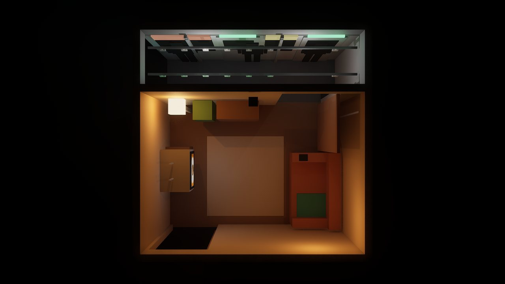
| 항목 | 치수·위치 |
|---|---|
| 전체 | 300 × 300, 벽 높이 240, 두께 10 |
| 지하철 칸 | Y 0~80 (안쪽 폭 70), 천장 215, 입구는 왼쪽 벽 전체 |
| 집 | 300 × 220 (Y 80~300) |
| 가벽 | 순수 290 = 판 ① 185 + 문 80 + 판 ② 25, 문 위 막음 판 80 × 30 |
| 사회→집 문 | X 190~270, 80 × 210, 집 쪽으로 열림 |
| 출구 | 아래쪽 벽 X 10~90 |
| 브라운관 | 왼쪽 벽 TV장 위, 화면 중심 Y 195 · 높이 76 |
| CCTV | 천장 아래 모서리 (151, 98) |
| 시청 거리 | 앉은 눈 → 화면 약 197~199 |
지하철 칸 확정 ver7: 영상 없음

- 손잡이 봉 2줄(Y 22·58, 높이 204~207), 손잡이 14개(30 간격, 고리 아래 184). 문 앞 X 200~260은 비움
- 차량 출입문·차창·광고·노선도 띠, 세로 기둥 2개
- 사람 실루엣 판 4장(키 165~178)으로 붐비는 느낌
- 형광등 띠 6500K, 낮은 천장 215(선택)
- 소리: 달리는 전철, 안내 방송, 발소리·대화
집
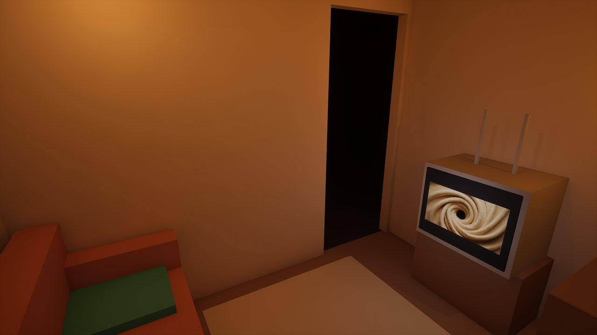

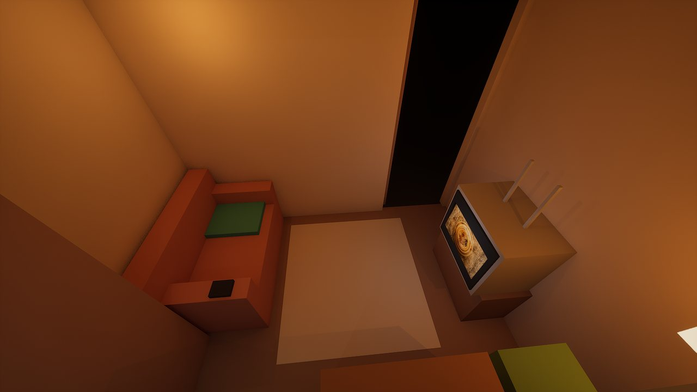
5가구 확정 ver8
11/15 카톡: 최대한 작은 소파로 확정. 리클라이너 안은 빠졌어요. 지금 모델의 소파(거실 구성)가 이미 폭 122라 그대로 쓰면 돼요.

작은 소파 확정
| 모델 크기 | 122 × 75 × 85(등받이), 좌판 45, 팔걸이 65 |
| 들어갈 자리 | X 215~290, Y 168~290 → 폭 122 이하, 깊이 75 이하 |
| 구할 때 | 1.5인·소형 2인 소파 (폭 110~120). 일반 2인 소파(140~160)는 자리를 넘음 |
| 화면까지 | 약 199 |
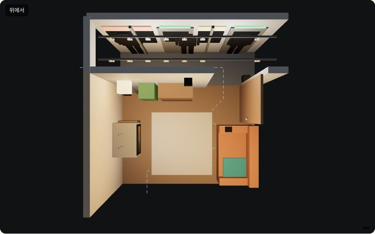
본안 구성 (거실)
브라운관 TV + TV장, 작은 소파 + 담요 + 리모컨, 러그, 스탠드 조명, 선반, 화분. 담요는 소파 옆 바구니(압력 센서)에 둠. 리클라이너 안(1인 자리)은 아래 자료 전체에 기록으로 남겨 둠.
그 밖의 집 가구 (거실 구성 기준)
| 가구 | 크기 X × Y × 높이 | 위치 | 상태 |
|---|---|---|---|
| TV장 | 40 × 74 × 48 | 왼쪽 벽 | 확정 |
| 브라운관 TV | 46 × 66 × 55 (모델 기준) | TV장 위 | 확정 |
| 담요 | 56 × 50 | 자리 위 / 바구니 | 확정 |
| 리모컨 | 14 × 11 | 팔걸이 / 사이드 테이블 | 확정 |
| 러그 | 135 × 140 | 자리 앞 | 추천 |
| 스탠드 조명 | 지름 22, 높이 172 | 왼쪽 위 모서리 | 추천 |
| 선반 | 65 × 28 × 120 | 가벽 앞 | 추천 |
| 화분 식물 | 30 × 30 × 115 | 스탠드 옆 | 추천 |
6영상 · 소리 확정 ver8
11/15 카톡: TV에는 저작권 문제 없는 모닥불 영상을 틀고, 사운드는 AI로 만든다.
집 TV 영상
| 내용 | 모닥불 반복 영상 |
| 출처 | 저작권 문제 없는 무료 영상 (상업 이용·재배포 가능한 라이선스, 출처 기록 보관) |
| 재생 | 문 열면 바로 시작, 끝없이 반복. 리모컨으로는 바뀌지 않음 |
| 화면 | 브라운관 안 16:9, 52 × 29 |
소리 (AI 생성)
| 소리 | 나오는 때 | 상태 |
|---|---|---|
| 불멍 (장작 타는 소리) | 문 열면 영상과 함께 | 확정 |
| 리모컨 사운드 (채널 잡음 등) | 리모컨 누를 때마다 추가 | 확정 |
| 1단계 시계 초침 빨라짐 | 담요·리모컨 중 하나 | 추천 |
| 2단계 휴대폰 알림·진동 | 두 가지 이상 | 추천 |
| 3단계 벽 너머 지하철 소리 | 앉은 지 3분 30초 | 추천 |
7인터랙션 확정 구현 전
Unreal 블루프린트로 구현. 아두이노 Leonardo가 컴퓨터에 키보드로 인식돼 센서가 반응하면 정해진 키(1~6)를 눌러 줘요.
| # | 관객 행동 | 감지 (확정) | 반응 | 키 |
|---|---|---|---|---|
| 1 | 문을 엶 | 문틀 자석 센서 | TV 켜짐 → 모닥불 영상 + 불멍 소리, 지하철 소리 끊김 ver8 | 1 |
| 2 | 앉음 · 편하게 기댐 | 소파 방석 밑 압력 센서 | 배경음 시작, 소리 단계 계산 시작 | 2 |
| 3 | 담요를 덮음 | 담요 바구니 밑 압력 센서 | 소리 단계 +1 | 3 |
| 4 | 리모컨을 누름 | 적외선 수신기 | 영상은 그대로, 사운드만 하나씩 추가 ver8 | 4 |
| 5 | 오래 머묾 | 시간 | 소리 3단계까지 | — |
| 6 | 출구로 나감 | 출구 문 센서 | 기록 저장 → 출구 화면에 QR ver8 | 6 |
블루프린트 구조
| BP_HomeDirector | 상태·기록·소리 단계, 입력, TV·소리 제어, 퇴장 처리 |
| BP_HomeDoor | Timeline으로 집 쪽 90° 열림 → 저절로 닫힘 |
| BP_SitZone · BP_ExitZone | 자리·출구 감지 박스 |
| BP_Blanket · BP_Remote | 담요·리모컨을 만지면 Director에 알림 |
| BP_CCTV | Scene Capture 2D로 2초마다 타임랩스 프레임 |
| SG_Visitors · WBP_Result | 머문 시간 저장 → 평균·순위 → 결과 화면, QR |
언리얼 물체마다 이름 태그를 붙여 두어서, 레벨을 다시 지어도 블루프린트가 Get All Actors with Tag로 찾아요.
퇴장 결과 (QR)
결과 페이지 예시: 머문 시간 4분 32초, 평균 3분 00초보다 1분 32초 길게, 41명 중 6번째(상위 15%), 만진 물건 목록. 견본 보기
8장비 목록
전시장은 기자재 대여가 안 되고(스툴·드릴·사다리만 가능), 유선 인터넷도 안 돼요.
| 장비 | 수량 | 용도 | 상태 |
|---|---|---|---|
| 노트북 | 1 | Unreal 실행, 센서·카메라 연결 | 누구 장비인지 미정 |
| 브라운관 TV (14~20인치) | 1 | 집 화면 | 구해야 함 |
| HDMI→AV 변환기 | 1 | 노트북 → 브라운관 | 구해야 함 |
| Arduino Leonardo | 1 | 센서 → 키 입력 | 구해야 함 |
| 자석(리드) 센서 | 2 | 사회→집 문, 출구 문 | 구해야 함 |
| 압력 센서(FSR) | 2 | 방석, 담요 바구니 | 구해야 함 |
| 적외선 수신기 + 리모컨 | 1 | 리모컨 누름 감지 | 구해야 함 |
| USB 카메라 | 1 | CCTV 타임랩스 | 구해야 함 |
| 스피커 | 2 | 지하철 칸, 집 | 구해야 함 |
| 작은 소파 (폭 120 이하) | 1 | 앉는 가구 | 구해야 함 |
| QR 화면 (태블릿/모니터) | 1 | 출구 QR | 구해야 함 |
| 조명 | 3 | 지하철 LED 바 6500K, 집 스탠드 2개 3500K | 구해야 함 |
| 휴대용 와이파이 | 1 | 관객별 결과 페이지 업로드 | 구해야 함 |
| 가벽·문틀·문·도어클로저 | — | 자립 구조물 | 제작 |
| 멀티탭 | 2 | 콘센트 8구 | 구해야 함 |
9크브페 지원서
마감 11/23(월) 23:59 · transmediastudy@gmail.com · HWP + PDF 2개 · 10페이지 이내 · 맑은고딕 12/10pt, 줄간격 160%
| 항목 | 상태 | 남은 것 |
|---|---|---|
| 신청 개요 (팀명, 참여자 3명) | 완료 | |
| 작품 정보 · 재료 · 크기 | 채움본 있음 | 빔프로젝터·압력센서 정리, 높이 500 → 240 (채움본에 반영) |
| 작품 소개 · 팀 소개 (100자) | 채움본 있음 | 붙여 넣기 (팀 소개의 Twinmotion 빼기) |
| 기획의도 · 시놉시스 | 채움본 있음 ver8 | 카톡 결정(작은 소파, 문→TV, 리모컨→소리, 모닥불) 반영 완료 |
| 표현 방식 · 음향 · 제작 방식 | 채움본 있음 | "(이 부분 이해 못함)" 등 메모 지우기 |
| 작품 사진 6장 | 대기 | 본안 최종 렌더 후 |
| 설치 상세 표 5개 | 채움본 있음 | 실행 컴퓨터, 전시 기간 확인 |
| 설치 예상 이미지 5장 | 대기 | 배치도·장비 배치도·단면 3장 |
| 워크스루 영상 YouTube 링크 | 대기 | 본안 렌더 후 업로드 |
10설계 과정 (어떻게 여기까지 왔나)
| 단계 | 배치 | 시청 거리 · 시야각 | 결론 |
|---|---|---|---|
| 기존 계획 | 세로로 나눔 A 120 / B 180, 벽 프로젝션 220 | 약 140 · 76° | 너무 가깝고 출구 동선이 화면 앞을 지남 |
| 안 1 | 화면만 150으로 축소 | 약 140 · 56° | 거리 문제는 그대로 |
| 안 2 | 가벽 이동 A 90 / B 210 | 약 170 · 56° | 사회 공간이 너무 좁음 |
| 안 3 | 가로로 나눔 A 100 / B 200 | 약 215 · 41° | 거리 확보 |
| 안 4 | 안 3 수정 (사용자 스케치), 화면 왼쪽 벽 | 약 240 · 37° | 방향 확정 |
| 안 5 | 사회를 지하철 칸 80으로, 집 220 | 약 197 (브라운관) | 최종 · 변형 8가지 비교 → 브라운관 확정 |
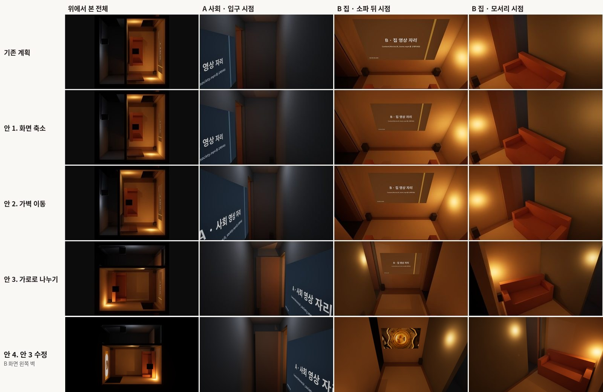
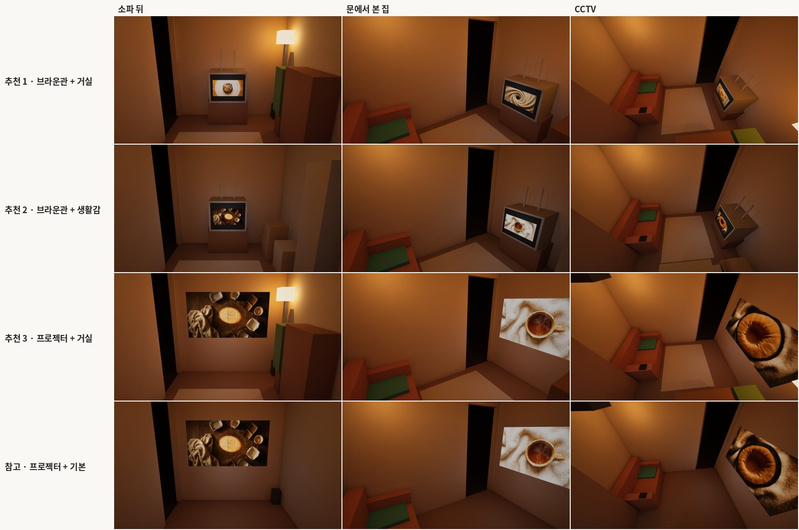
11버전 기록
작품 사진 다시 찍기: 너무 위에서 찍었다는 피드백 → 흰 스튜디오 배경, 눈높이, 카메라 쪽 벽을 걷어 낸 단면 4면 + 상단.
크브페 작품 사진: 본안(작은 소파, 3500K)을 다시 지어 정면·좌측면·우측면·후면·상단 + 관객 시점 4장 촬영, 캡션 바둑판 이미지와 고화질 묶음.
사진·영상 다운로드: 사진마다 받기 버튼(렌더는 고화질 1920×1080), 묶음 3개(고화질 렌더 50장, 영상 18개, 웹용 사진 전체).
팀 카톡 결정 반영: 작은 소파, 문 열면 TV, 리모컨은 사운드만 추가, 센서 감지, QR은 화면, 모닥불 영상(저작권 무관) + AI 사운드. 이전 자료 전부(렌더·영상·HTML)를 이 페이지 안에 첨부.
전체 현황 한 페이지로 통합. 브라운관·지하철(영상 없음) 확정, 조명 흰색 쪽으로, 결정 현황 15개·진행률·장비 목록·크브페 진행 표 추가.
안 5 치수표: 가벽 제작 치수(순수 290), 지하철 칸 단면·손잡이, 소파/리클라이너 치수.
홈 화면 개편: 지금 할 일·결정할 것·진행 단계를 첫 화면에.
브라운관/프로젝터 × 가구 8가지 비교·추천, 프로젝터 레벨 렌더·워크스루, 인터랙션을 블루프린트로 개편.
안 5 Unreal 렌더 20장·워크스루 4개, 3D 미리보기, 인터랙션 설계, QR 결과 견본.
안 4 레벨·렌더·워크스루, 배치 5종 비교 시트·영상.
안 4 설계(사용자 스케치 기반 배치도·스크립트).
주제별 진행 기록 페이지, 워크스루 영상 5종 업로드.
진행 기록 저장소 생성. 그 전: Unreal 공간 첫 생성(19:10), 배치 검토 보고서(19:55), 4가지 배치 레벨(20:55), 워크스루(21:40).
13자료 전체 (이 페이지 안에 첨부)
11/13부터 만든 렌더·영상·HTML을 빠짐없이 넣었어요. 제목을 누르면 펼쳐져요. 사진은 누르면 크게 보여요.
13-1 · 안 5 Unreal 렌더 30장 (6개 레벨 × 카메라 5대)
거실 · 작은 소파 (본안) L_Opt5B
기본 L_Opt5A
1인 자리 (리클라이너) L_Opt5C
생활감 L_Opt5D
프로젝터 + 거실 L_Opt5PB
프로젝터 + 기본 L_Opt5PA
13-2 · 관객 시점 워크스루 영상 18개 (각 30초)
안 5
배치안 1~4와 처음 계획
13-3 · 브라운관/프로젝터 × 가구 4종 = 8가지 변형 (점수표 + 미리보기 24장)
| 순위 | 화면 | 가구 | 집다움 ×2 | 안주 메시지 ×2 | CCTV 시야 | 동선 | 준비 비용 | 연출 ×2 | 보기 편함 | 준비 | 합계 |
|---|---|---|---|---|---|---|---|---|---|---|---|
| 1 | 브라운관 | 거실 + 러그·스탠드·화분·선반 | 5 | 4 | 4 | 4 | 3 | 5 | 3 | 3 | 45 |
| 2 | 브라운관 | 생활감 + 상자·바구니·행거·슬리퍼 | 4 | 5 | 4 | 4 | 3 | 5 | 3 | 3 | 45 |
| 3 | 프로젝터 | 거실 + 러그·스탠드·화분·선반 | 5 | 4 | 4 | 4 | 3 | 3 | 5 | 3 | 43 |
| 4 | 브라운관 | 1인 자리 리클라이너·사이드 테이블 | 4 | 5 | 3 | 4 | 2 | 5 | 3 | 3 | 43 |
| 5 | 프로젝터 | 생활감 + 상자·바구니·행거·슬리퍼 | 4 | 5 | 4 | 4 | 3 | 3 | 5 | 3 | 43 |
| 6 | 브라운관 | 기본 소파·담요·리모컨만 | 2 | 3 | 5 | 5 | 5 | 5 | 3 | 3 | 41 |
| 7 | 프로젝터 | 1인 자리 리클라이너·사이드 테이블 | 4 | 5 | 3 | 4 | 2 | 3 | 5 | 3 | 41 |
| 8 | 프로젝터 | 기본 소파·담요·리모컨만 | 2 | 3 | 5 | 5 | 5 | 3 | 5 | 3 | 39 |
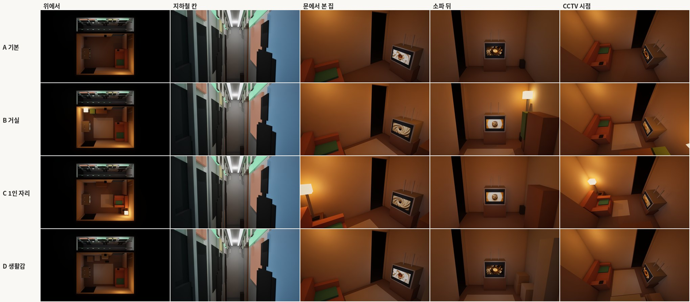
브라운관 + 기본

브라운관 + 거실
브라운관 + 1인 자리


브라운관 + 생활감
프로젝터 + 기본
프로젝터 + 거실
프로젝터 + 1인 자리
프로젝터 + 생활감
13-4 · 이전 배치안 렌더 (처음 계획 ~ 안 4)
13-5 · HTML 자료 8개 (페이지 안에서 바로 보기)
각 페이지를 이 안에서 그대로 열어 볼 수 있어요. 펼칠 때 불러와요.
안 5 치수표 — 가벽·지하철 칸·가구 (소파/리클라이너 전환)
인터랙션 설계 — 블루프린트 단계별 안내·아두이노 코드·지원서 문단
QR 결과 페이지 견본
8가지 변형 비교·추천 페이지
3D 미리보기 (마우스로 돌려 보기, 가구 켜고 끄기)
배치 검토 보고서: 공간이 좁다
처음 세운 전시 구조 계획
처음 계획 치수표
크브페 지원서 채움본은 claude.ai 문서라 이 페이지에 끼워 넣을 수 없어서, 9번의 링크로 열어요. 진행 상태와 결정 내용은 위 1·9번에 모두 반영돼 있어요.